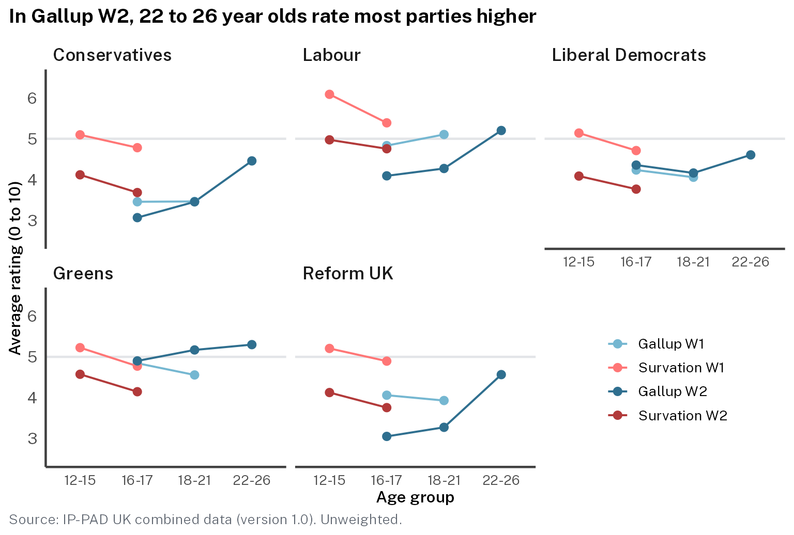
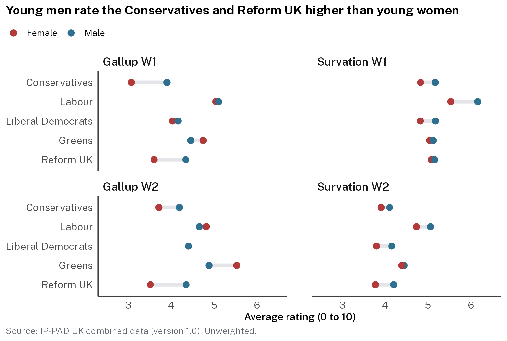
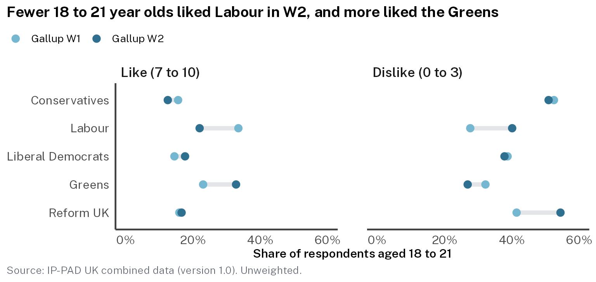

Feelings towards the parties
Parties
Age
Gender
How young people in the UK rate the Conservatives, Labour, the Liberal Democrats, the Greens and Reform UK, and how this differs by age, gender and survey.
Most of the young people in these surveys are too young to vote, so their feelings towards the parties are one of the few ways to see how they relate to party politics. In all four surveys, we asked them to rate five parties on a scale from 0 (strongly dislike) to 10 (strongly like). The surveys took place at different points in the political cycle. Gallup W1 was fielded in May and June 2024, during the general election campaign and under a Conservative government, while all later surveys took place after Labour had come to power (see Who took part).
Which parties young people like
Each panel shows one survey. Bars to the right give the share of respondents who rate a party 7 or higher, bars to the left the share who rate it 3 or lower. Ratings of 4 to 6 are not shown.
Labour is the party that the largest share of respondents like in Gallup W1 (33%) and in both Survation surveys. Gallup W2 is the exception, as 33% of its respondents like the Greens and 29% like Labour. At the other end, the Conservatives and Reform UK are disliked most often. In Gallup W1, 53% rate the Conservatives 3 or lower. In both second waves, Reform UK receives the lowest possible rating of 0 more often than any other party (28% in Gallup W2, 28% in Survation W2). At the same time, 25% of Survation W2 respondents like Reform UK, about as many as like the Greens. This suggests that Reform UK divides young people more sharply than the other parties do.
Survation W1 looks different from the other surveys. Its respondents like every party more often and dislike every party less often, and their average rating across all five parties is 5.2, against 4.2 to 4.4 in the other surveys. This fits the general tendency of Survation W1 respondents to give higher answers on 0 to 10 scales, so it is safer to compare the order of the parties within that survey than their levels across surveys.
Age
Each panel shows one party. The dots give the average rating in each age group of a survey. Groups with fewer than 50 respondents are left out.

Because each survey covers a different age range, age differences are best read within a survey. In Gallup W2, 22 to 26 year olds rate the Conservatives at 4.5 on average, compared with 3.5 among 18 to 21 year olds, and Reform UK at 4.6 compared with 3.3. Labour, too, is rated higher by the older group, while ratings of the Greens hardly differ by age. Since the older group rates almost every party more warmly, this could partly reflect a general tendency to give higher ratings rather than a preference for particular parties. Within the Survation surveys, the age pattern runs the other way, as 16 and 17 year olds rate all five parties slightly lower than 12 to 15 year olds.
Gender
Each row compares the average rating of a party among young women and young men in one survey. A longer line means a larger gap.

The gender differences concern specific parties. In all four surveys, young men rate the Conservatives higher than young women, by 0.2 to 0.8 points, and Reform UK by 0.1 to 0.8 points. In turn, young women in the two Gallup surveys rate the Greens higher than young men, by 0.3 points in W1 and 0.6 points in W2. For Labour and the Liberal Democrats, the gaps are smaller and less consistent. In Survation W1, young men rate every party somewhat higher than young women.
The same ages in two waves
Both panels compare Gallup respondents aged 18 to 21 in W1 (spring 2024, light blue) and W2 (mostly late 2025, dark blue). A longer line means a larger difference between the two surveys.

The two Gallup surveys allow a fairer comparison over time, because both include over 800 respondents aged 18 to 21 (821 and 878) recruited in the same way. In this age group, the share who like Labour is 33% in W1 and 22% in W2, while the share who like the Greens rises from 23% to 33%. Interestingly, the share who like Reform UK hardly changes, but the share who give it a rating of 0 rises from 17% to 34%. The two surveys lie on either side of the change from a Conservative to a Labour government. However, the two samples consist of different young people, and the data cannot tell whether the differences reflect the political events of that period or who happened to take part.
About these data
The four surveys differ in age range, recruitment and timing, and the data are not weighted. Gallup W1 introduced the parties as those “in the Parliament of the United Kingdom” and the other surveys as those “in the House of Commons”. The data page explains the design.